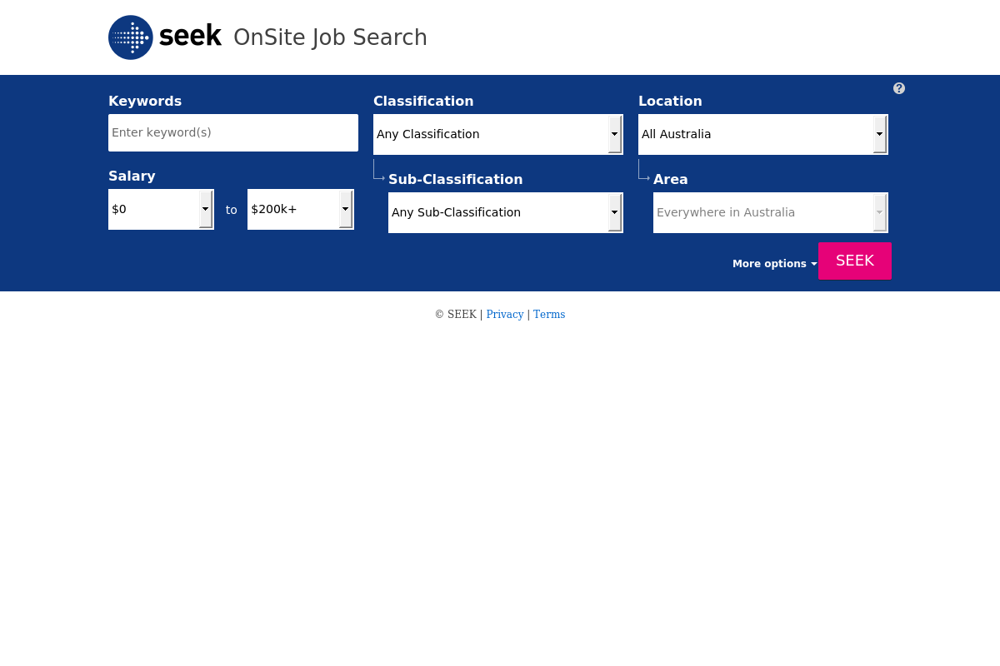

Generated by LazyRecon on Tue May 21 12:31:30 EDT 2019
Port 80 Port 443 
; <<>> DiG 9.11.4-2-Debian <<>> jobs.seek.com.au ;; global options: +cmd ;; Got answer: ;; ->>HEADER<<- opcode: QUERY, status: NOERROR, id: 42637 ;; flags: qr rd ra; QUERY: 1, ANSWER: 1, AUTHORITY: 0, ADDITIONAL: 1 ;; OPT PSEUDOSECTION: ; EDNS: version: 0, flags:; MBZ: 0x0005, udp: 512 ;; QUESTION SECTION: ;jobs.seek.com.au. IN A ;; ANSWER SECTION: jobs.seek.com.au. 5 IN A 54.230.151.254 ;; Query time: 179 msec ;; SERVER: 192.168.58.2#53(192.168.58.2) ;; WHEN: Tue May 21 12:31:30 EDT 2019 ;; MSG SIZE rcvd: 61
jobs.seek.com.au has address 54.230.151.254
HTTP/1.1 200 OK Content-Type: text/html; charset=utf-8 Content-Length: 20744 Connection: keep-alive Access-Control-Allow-Headers: X-Seek-Site, X-SeekAPI-Locale, Authorization, Content-Type, Cache-Control, X-Seek-EC-SessionId, X-Requested-With Cache-Control: no-cache, no-store, must-revalidate Content-Security-Policy: block-all-mixed-content Date: Tue, 21 May 2019 16:31:32 GMT Expires: -1 P3P: policyref="/w3c/p3p.xml", CP="CAO DSP COR CUR ADM DEV TAI OUR IND" Pragma: no-cache Server: nginx Set-Cookie: ASP.NET_SessionId=sofc5n0xck111pnmf2aev5yq; path=/; secure; HttpOnly Set-Cookie: JobseekerSessionId=5dd881ca-9cd6-4b92-94c1-2807405c2059; domain=seek.com.au; path=/ Set-Cookie: JobseekerVisitorId=ce21821b-eaa4-42bc-8b68-5f8068cc2604; domain=seek.com.au; expires=Tue, 21-May-2024 16:31:32 GMT; path=/ Set-Cookie: responsive-trial=unknown:71; domain=seek.com.au; expires=Thu, 21-May-2020 14:00:00 GMT; path=/ X-UA-Compatible: IE=Edge;chrome=1 X-Cache: Miss from cloudfront Via: 1.1 f5171077d7910626ec3cf65e0c222f3c.cloudfront.net (CloudFront) X-Amz-Cf-Id: g4Jq-WS80rd7l4B_v4IxNAcCTZhpCV4O8_huGufiQo4hgjce2lb65Q==
nmap -sV -T3 -Pn -p3868,3366,8443,8080,9443,9091,3000,8000,5900,8081,6000,10000,8181,3306,5000,4000,8888,5432,15672,9999,161,4044,7077,4040,9000,8089,443,7447,7080,8880,8983,5673,7443 Starting Nmap 7.70 ( https://nmap.org ) at 2019-05-21 12:31 EDT Nmap scan report for jobs.seek.com.au (54.230.151.254) Host is up (0.14s latency). rDNS record for 54.230.151.254: server-54-230-151-254.sin2.r.cloudfront.net Not shown: 32 filtered ports PORT STATE SERVICE VERSION 443/tcp open ssl/http Amazon CloudFront httpd Service detection performed. Please report any incorrect results at https://nmap.org/submit/ . Nmap done: 1 IP address (1 host up) scanned in 19.50 seconds